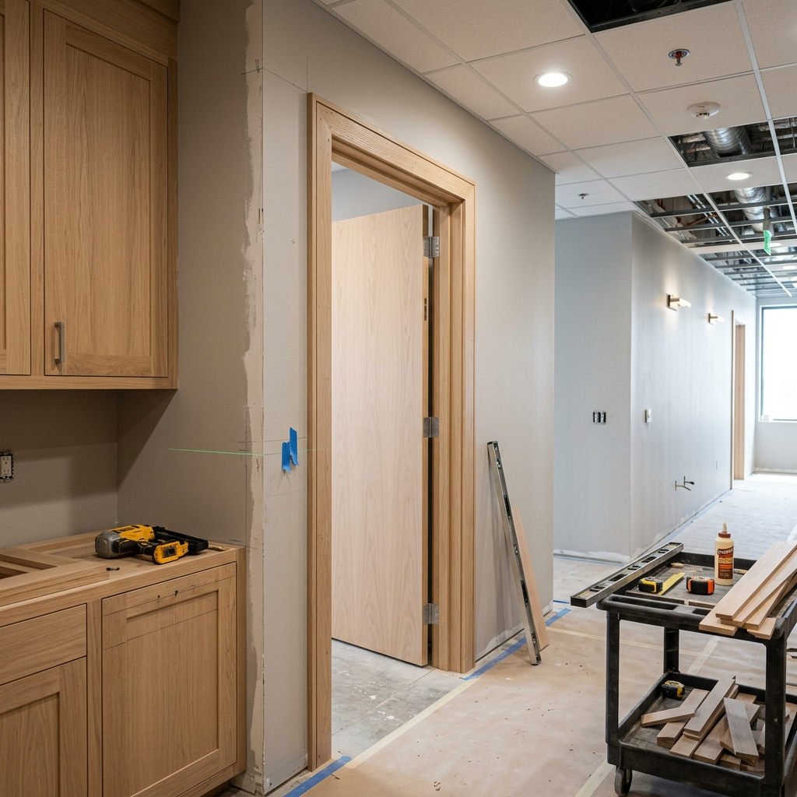

Cabinetry and millwork
Box construction, door finish, fillers, panels and hardware all influence installation and the final visual alignment.

Livane Renovation plans and executes kitchen remodeling scopes across South Florida, coordinating demolition, cabinetry, surfaces, tile and finish work around the existing property conditions.
Livane Renovation provides practical kitchen remodeling for active properties, amenity spaces, offices, hospitality properties, and professionally managed buildings.
We review existing conditions, dimensions, access, adjacent finishes, material requirements, and scheduling constraints before defining the scope. That keeps the proposal practical and helps homeowners, property owners, managers, and builders compare the work on clear terms.
Selective demolition coordination, tile and backsplash installation, finish carpentry, millwork coordination, flooring transitions, surface preparation, fixture-area finish work, and punch-list completion.
Service guide
Livane Renovation plans and executes kitchen remodeling scopes across South Florida, coordinating demolition, cabinetry, surfaces, tile and finish work around the existing property conditions. A kitchen remodel is a coordinated sequence rather than a collection of isolated finish upgrades. The existing layout, demolition limits, cabinet dimensions, countertop templating, backsplash, flooring, lighting and appliance interfaces must align. Plumbing and electrical work, when required, should be handled or coordinated according to the agreed scope and by appropriately qualified trades.
Survey the existing layout, dimensions, utilities, access and finishes to remain.
Define demolition limits and protect adjacent occupied areas.
Confirm the proposed cabinet, appliance and finish relationships.
Coordinate required rough-trade work without representing unlicensed work as self-performed.
Install cabinets or millwork to the approved layout.
Coordinate countertop measurement and installation after base conditions are ready.
Complete backsplash, flooring, lighting and finish interfaces in sequence.
Adjust, detail, inspect and close out the completed kitchen.
Box construction, door finish, fillers, panels and hardware all influence installation and the final visual alignment.
Material thickness, overhangs, seams, sink conditions and templating sequence must coordinate with installed cabinets.
Tile format, outlet locations, termination points and countertop plane determine the finished layout.
Floor height and whether flooring runs below or around cabinets should be resolved before work begins.
A cosmetic update retains the workable layout and focuses on visible finishes. A full remodel becomes appropriate when cabinetry, layout, utilities or multiple connected assemblies must change.
Refinishing may suit sound cabinet boxes and an unchanged layout. Damage, poor function or major dimensional changes can favor replacement.
The answer depends on flooring type, cabinet system, future serviceability and height transitions. It should be decided as part of the full assembly, not by a universal rule.
No responsible scope can be priced from the service name alone. The principal project variables are:
The defined scope can include demolition, layout coordination, cabinetry, surfaces, tile, flooring and finish integration, with specialized trades coordinated where required.
Timing depends on design decisions, material lead times, demolition discoveries, trade sequencing and building access. A schedule is reliable only after the scope is defined.
Usually not in the active work zone. Phasing and temporary arrangements depend on the extent of demolition and utility interruptions.
Yes. Keeping a functional layout can reduce connected work, but dimensions and appliance requirements still need verification.
Typically the final backsplash layout follows installed countertop conditions, though the complete sequence should be agreed in advance.
Send room photos, approximate dimensions, property location, desired cabinet approach, finish references and known appliance changes.
Share clear photos, approximate square footage, the property location, current condition and desired result. That information helps separate a preliminary conversation from work that needs a site review.
Send photos, approximate square footage, the property location, and your target timing. We will advise whether the next step is a preliminary review or a South Florida site visit.
Request a Quote